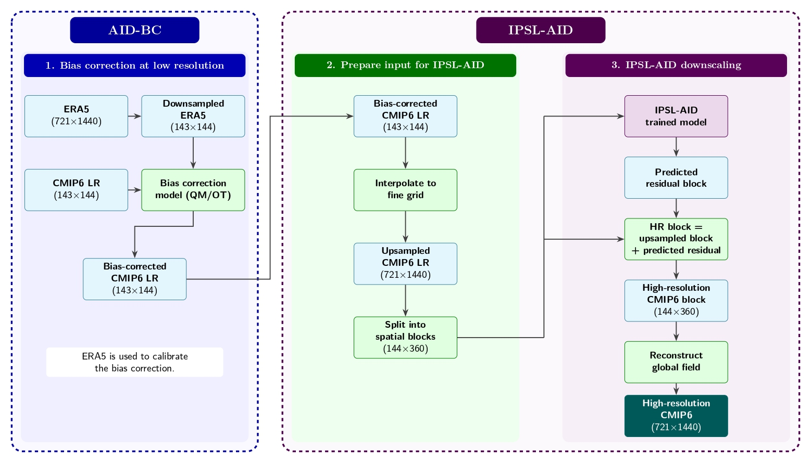
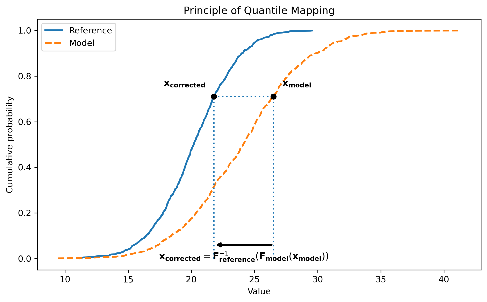

Bias Correction
AID-BC provides two bias-correction methods to reduce systematic distributional differences between CMIP6 climate model outputs and ERA5 reference data:
Quantile Mapping (QM), for univariate correction,
Optimal Transport (OT), for univariate or multivariate correction.
Both methods are fitted over a selected training period and then applied to a CMIP6 application period. The corrected CMIP6 fields can subsequently be used as large-scale inputs for AI-based downscaling experiments.
Bias correction is performed on the native CMIP6 grid. ERA5 data are therefore either projected onto the CMIP6 grid during preprocessing or loaded from previously prepared ERA5-on-CMIP6 files.
Within the IPSL-AID workflow, AID-BC is used as a preprocessing step before the downscaling stage. It corrects the low-resolution CMIP6 fields using ERA5 as reference data, and the resulting bias-corrected CMIP6 fields are then interpolated to the ERA5 grid and passed to IPSL-AID.
The figure below summarizes the complete AID-BC/IPSL-AID workflow. AID-BC performs the bias correction on the native CMIP6 grid (\(143\times144\)). The corrected CMIP6 fields are then upsampled to the ERA5 grid (\(721\times1440\)), split into spatial blocks, and used as inputs to the trained IPSL-AID model. IPSL-AID predicts a high-resolution residual for each block, which is added to the corresponding upsampled CMIP6 block before reconstructing the final global high-resolution field.


Integration of AID-BC within the IPSL-AID workflow, from low-resolution bias correction to high-resolution CMIP6 reconstruction.
Quantile Mapping
Quantile Mapping corrects one climate variable at a time by matching the distribution of biased CMIP6 data to the ERA5 reference distribution while preserving the relative rank of the CMIP6 values.
For a CMIP6 value \(x_{CMIP6}\), the corresponding quantile in the CMIP6 training distribution is
and the corrected value is obtained from the ERA5 inverse cumulative distribution function:
or equivalently,
The principle is illustrated below.


Illustration of Quantile Mapping. A CMIP6 value is converted into a cumulative probability using the CMIP6 CDF, then mapped to the ERA5 value corresponding to the same probability.
In the current implementation, exactly one climate variable is corrected in a Quantile Mapping experiment. Fields are reshaped from
(time, latitude, longitude)
to
(time, latitude * longitude)
before fitting.
AID-BC can fit either one global Quantile Mapping corrector using all training samples or one independent corrector for each month.
Optimal Transport
Optimal Transport can correct one or several climate variables jointly and can therefore account for spatial and inter-variable dependencies that are not explicitly represented by a variable-by-variable correction.
AID-BC treats each time step as a point in a feature space. The cost of transporting a CMIP6 point \(x\) to an ERA5 point \(y\) is the squared Euclidean distance:
Instead of solving the unregularized transport problem directly, AID-BC uses entropy-regularized Optimal Transport:
where a and b are uniform empirical weights and
\(\varepsilon\) controls the strength of the entropic regularization.
The regularized problem is solved with the Sinkhorn algorithm in log space. The iterations stop when the change in the dual potentials falls below a convergence threshold or when the maximum number of iterations is reached.
After fitting, the ERA5-side dual potential is used to construct a smooth transport function for new CMIP6 samples:
This allows new CMIP6 samples to be corrected without solving a new full Sinkhorn problem for each sample.
Feature space construction
ERA5 and CMIP6 training fields can be standardized using a shared per-feature normalization. The same normalization parameters are used during application, and corrected values are transformed back to their original physical scale.
For a single variable, each time step is flattened into a vector of length
latitude * longitude
For several jointly corrected variables, the flattened fields are concatenated into a vector of length
n_variables * latitude * longitude
so that all variables and grid points are transported jointly.
Training and application
Both Quantile Mapping and Optimal Transport use the same two-period workflow.
Training period
The training period is used to estimate the statistical relationship between ERA5 and historical CMIP6 data.
Both datasets must share the same latitude-longitude grid. In the current workflow, ERA5 is represented on the native CMIP6 grid.
Application period
The application period contains the CMIP6 data to be corrected using the fitted Quantile Mapping or Optimal Transport model.
It can correspond to:
a historical period not used during training,
a validation or test period,
a future CMIP6 simulation period.
Corrected fields are reconstructed on the native CMIP6 grid and saved as yearly NetCDF files.
Monthly splitting
Both methods can use either:
one global corrector fitted from all training samples,
one independent corrector for each month.
Monthly splitting is especially useful for Optimal Transport because the
Sinkhorn problem involves a pairwise cost matrix of shape
(n_x, n_y), where n_x and n_y are the numbers of CMIP6 and ERA5
training samples.
When the two sample counts are similar, memory and computational requirements scale approximately quadratically with the number of training samples. Splitting the training period by month therefore substantially reduces the size of each transport problem.
Optimal Transport parameters
The Optimal Transport solver is controlled by the following parameters:
epsilonStrength of the entropic regularization. Larger values produce a smoother transport problem, while smaller values generally preserve more variability but are harder to optimize.
num_iterationsMaximum number of Sinkhorn iterations.
thresholdConvergence threshold applied to changes in the dual potentials.
dtypeFloating-point precision used by JAX (
float32orfloat64).batch_sizeNumber of time steps transported together during application to control memory usage.
Workflow
The AID-BC workflow consists of an optional preprocessing step followed by bias correction using either Quantile Mapping or Optimal Transport.
1. Precompute ERA5 on the CMIP6 grid
AID_BC.preprocess resizes one ERA5 variable onto the native CMIP6 grid and
writes one compressed NetCDF file per year.
Run this step once for each ERA5 variable and CMIP6 grid combination.
Example:
python -m AID_BC.preprocess \
--era5_root /path/to/ERA5/data_6hourly_t2m \
--cmip6_root /path/to/CMIP6_historical/data_6hourly_tas \
--variable VAR_2T \
--start_year 1980 \
--end_year 2014 \
--output_dir /path/to/ERA5_on_CMIP6/data_6hourly_t2m
The output directory contains one file per year together with a
metadata.json file describing the preprocessing configuration:
data_6hourly_t2m/
├── samples_1980.nc
├── samples_1981.nc
├── ...
├── samples_2014.nc
└── metadata.json
For multivariate Optimal Transport experiments, preprocessing must be performed once for each variable.
2. Run Quantile Mapping
Quantile Mapping accepts exactly one variable.
Example:
python -m AID_BC.main \
--method qm \
--split month \
--train_start 1980 \
--train_end 2014 \
--apply_start 2021 \
--apply_end 2021 \
--variables VAR_2T \
--era5_on_cmip6_root \
VAR_2T=/path/to/ERA5_on_CMIP6/data_6hourly_t2m \
--cmip6_train_root \
VAR_2T=/path/to/CMIP6_historical/data_6hourly_tas \
--cmip6_apply_root \
VAR_2T=/path/to/CMIP6_future/data_6hourly_tas \
--output_dir \
VAR_2T=data/CMIP6_QM/data_6hourly_tas_corrected
3. Run Optimal Transport
Optimal Transport can correct one variable or several variables jointly.
Example:
python -m AID_BC.main \
--method ot \
--split month \
--train_start 1980 \
--train_end 2014 \
--apply_start 2021 \
--apply_end 2021 \
--variables VAR_2T VAR_10U VAR_10V VAR_TP \
--era5_on_cmip6_root \
VAR_2T=/path/to/ERA5_on_CMIP6/data_6hourly_t2m \
VAR_10U=/path/to/ERA5_on_CMIP6/data_6hourly_u10 \
VAR_10V=/path/to/ERA5_on_CMIP6/data_6hourly_v10 \
VAR_TP=/path/to/ERA5_on_CMIP6/data_6hourly_tp_3hmean \
--cmip6_train_root \
VAR_2T=/path/to/CMIP6_historical/data_6hourly_tas \
VAR_10U=/path/to/CMIP6_historical/data_6hourly_uas \
VAR_10V=/path/to/CMIP6_historical/data_6hourly_vas \
VAR_TP=/path/to/CMIP6_historical/data_6hourly_pr \
--cmip6_apply_root \
VAR_2T=/path/to/CMIP6_future/data_6hourly_tas \
VAR_10U=/path/to/CMIP6_future/data_6hourly_uas \
VAR_10V=/path/to/CMIP6_future/data_6hourly_vas \
VAR_TP=/path/to/CMIP6_future/data_6hourly_pr \
--output_dir \
VAR_2T=data/CMIP6_OT/data_6hourly_tas_corrected \
VAR_10U=data/CMIP6_OT/data_6hourly_uas_corrected \
VAR_10V=data/CMIP6_OT/data_6hourly_vas_corrected \
VAR_TP=data/CMIP6_OT/data_6hourly_pr_corrected \
--ot_epsilon 1 \
--ot_num_iterations 1000000 \
--ot_threshold 0.1 \
--ot_batch_size 16 \
--ot_dtype float64
The Optimal Transport parameters may need to be adjusted depending on the training period, sample size, variables, normalization, and available computational resources.
Limitations
Quantile Mapping is univariate and corrects only the marginal distribution of one climate variable at a time. It does not explicitly preserve dependencies between several climate variables.
Optimal Transport is more computationally demanding. For
n_xCMIP6 samples andn_yERA5 samples, the dominant pairwise matrices have shape(n_x, n_y), and memory usage scales as \(O(n_x n_y)\), or approximately \(O(N^2)\) when the two sample counts are similar.Entropic regularization in Optimal Transport introduces smoothing. Large values of
epsiloncan reduce variance and extreme values.Small values of
epsiloncan make Sinkhorn convergence slower and more difficult.Both methods assume that the statistical relationship estimated during the training period remains applicable during the application period.
References
[1] Pooladian, Aram-Alexandre, and Niles-Weed, Jonathan. “Entropic estimation of optimal transport maps.” arXiv preprint arXiv:2109.12004 (2021).